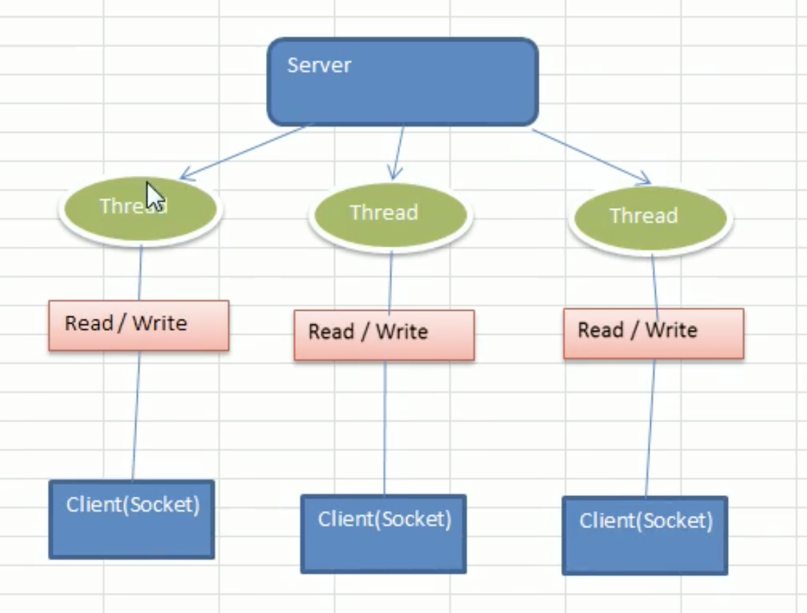
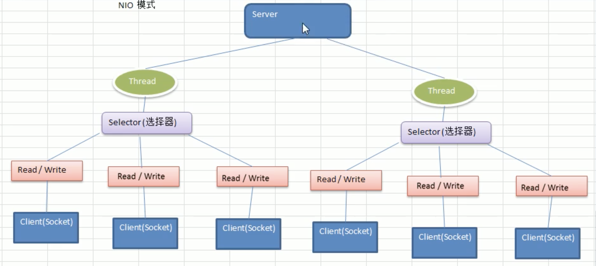
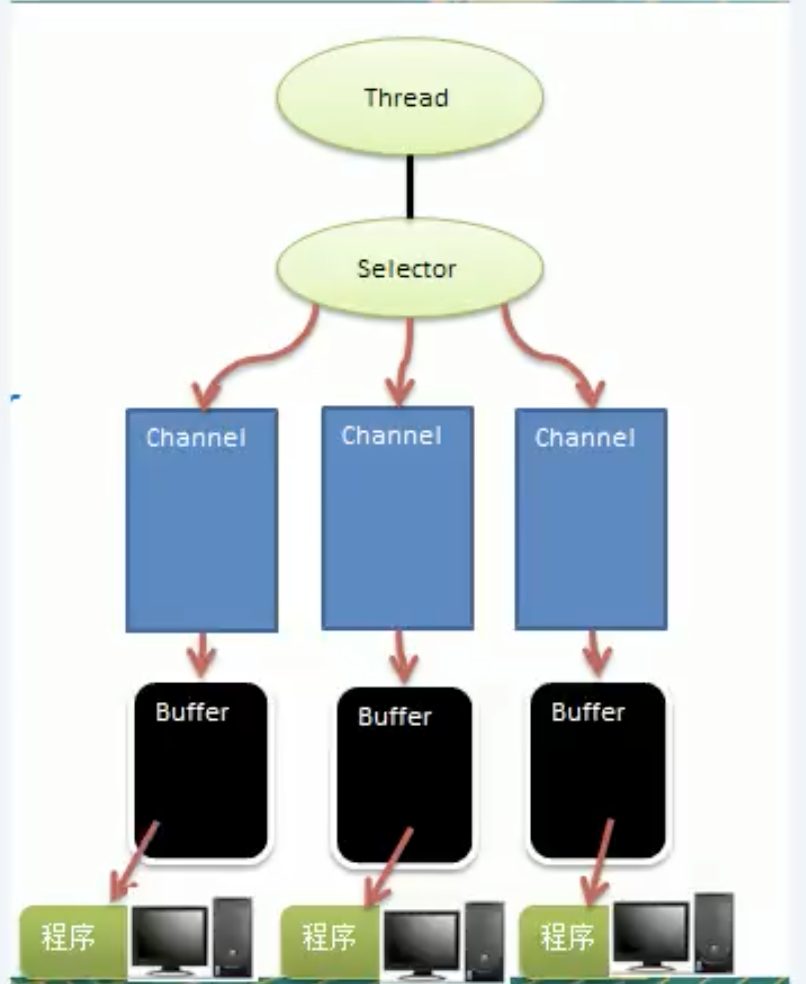
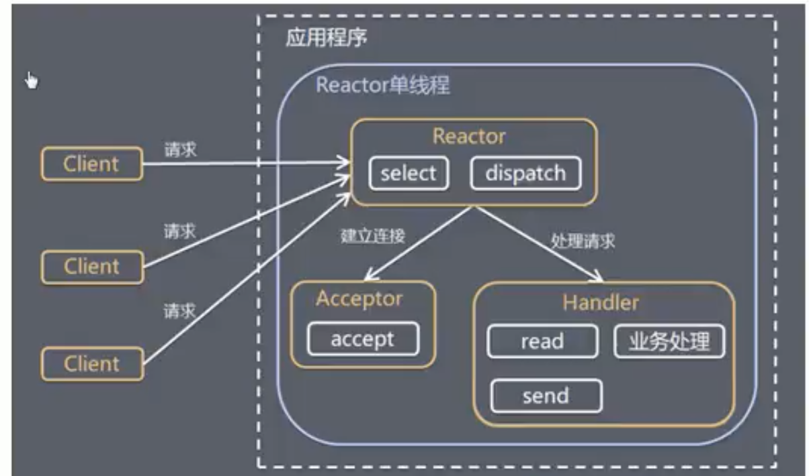
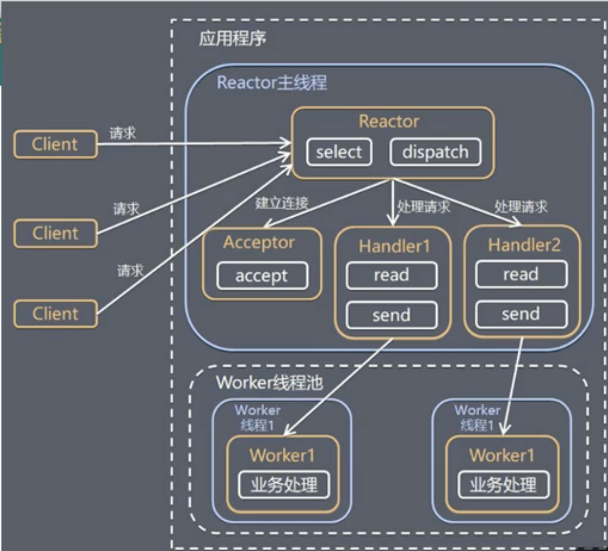
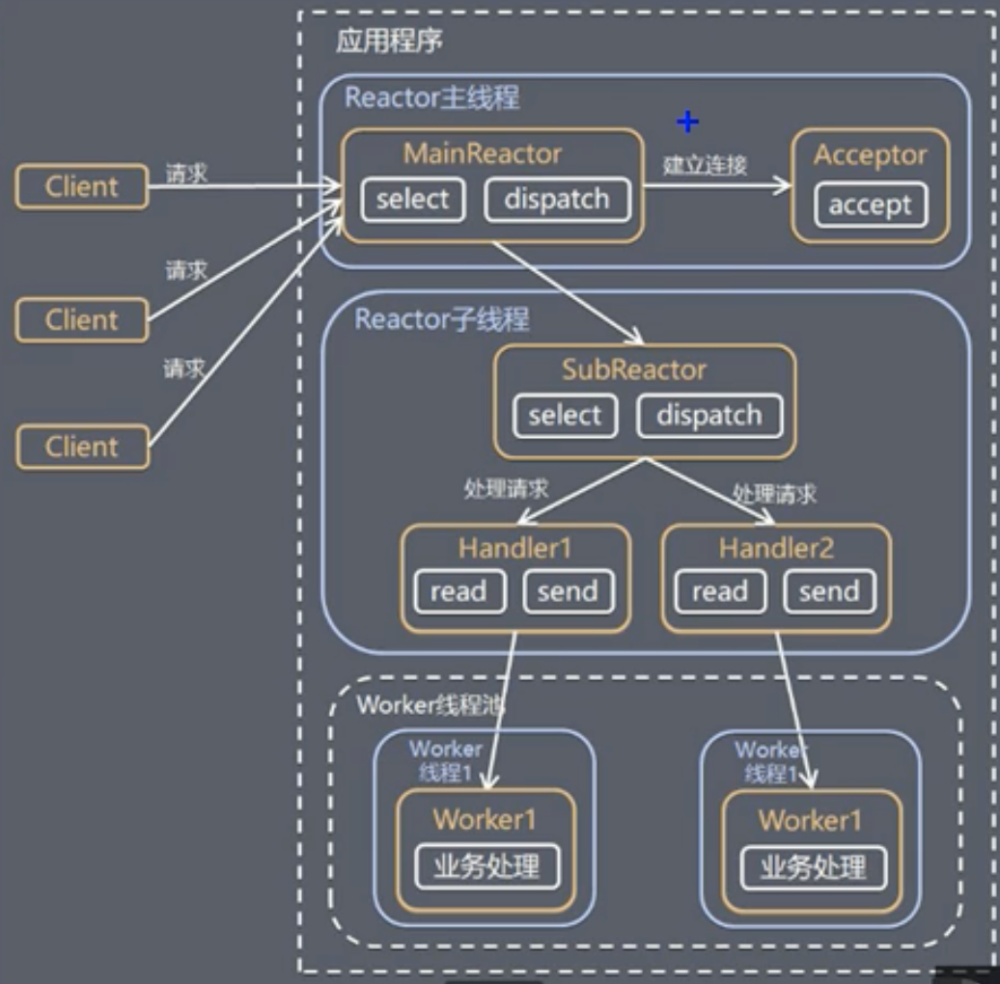
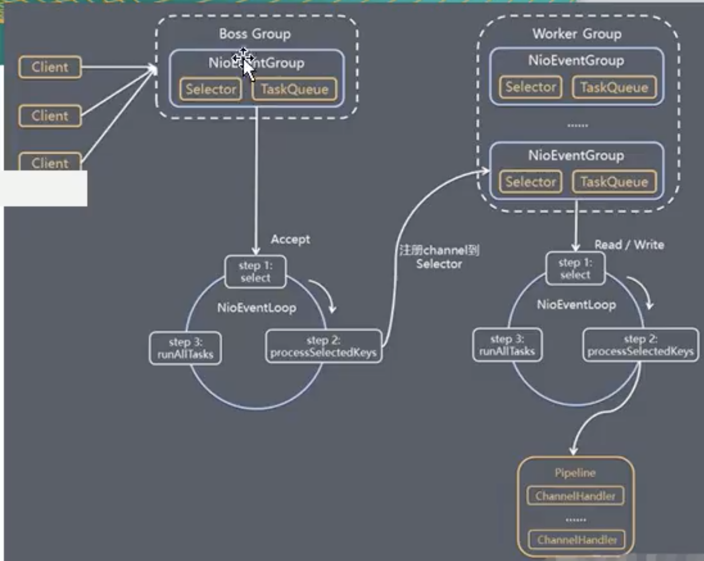

基本概念
netty是一个针对高并发的网络框架 特点: 异步，事件驱动
netty的层次结构自下而上可以理解为 - TCP/IP - JDK io socket API - NIO - netty
IO模型
BIO

blocking I/O
同步并阻塞 一个连接对应一个线程
如果有海量的连接，会起大量线程，而线程创建、销毁、切换是有成本的 对于空闲的连接，还是会占用线程 如果暂时没有数据可读，会一直阻塞在Read操作
NIO

java no-bloking IO 非阻塞的io
同步非阻塞 服务器一个线程处理多个连接
核心组件 Channel 通道 Buffer 缓冲区 Selector 选择器 
事件驱动
Buffer是双向的，这一点和InputStream, OutputStream不同
AIO
异步非阻塞，jdk1.7引入，还未得到广泛应用 Proactor模式
三种模型的适用场景 | 模型 | 场景 | | ----- | ---- | | BIO | 连接数目较少，对服务器资源要求较高，jdk1.4之前唯一选择| | NIO | 连接数目较多，连接时间较短，jdk1.4开始支持，编程比较复杂| | AIO | 连接数目较多，连接时间较长，jdk1.7开始支持|
Buffer
缓冲区，可读可写的内存块 可以理解成一个容器对象 读取和写入的数据都会经过Buffer
public abstract class Buffer {
// Invariants: mark <= position <= limit <= capacity
// 标记，一般不主动修改
private int mark = -1;
// 表示下一个读写的索引
private int position = 0;
// 表示缓冲区的当前终点，可变，不能对超过终点的位置进行读写
private int limit;
// 容量，不可变
private int capacity;
// 翻转
public final Buffer flip() {
limit = position;
position = 0;
mark = -1;
return this;
}
}
ByteBuffer最为常用，因为网络中是以字节形式传输的
NIO提供了MappedByteBuffer，可以让文件直接在堆外内存进行修改，而如何同步到文件由NIO来完成，操作系统不需要拷贝一次
NIO支持多个Buffer，即Buffer数组，完成读写操作
Scattering 分散 Gathering 聚合
Channel
- 可以同时进行读写
- 可以异步读写数据
- Channel可以从Buffer读数据，也可以写数据到Buffer
常用的有 - ServerSocketChannel TCP数据读写，可以对应ServerSocket理解 - SocketChannel TCP数据读写，可以对应Socket理解 - FileChannel 文件读写 - DatagramChannel用于UDP数据的读写
Selector
Selector能够检测多个注册的通道上是否有事件发生，多个Channel以事件的方式可以注册到同一个Selector，如果有事件发生，便获取事件然后针对每个事件进行相应处理。这样可以用一个单线程管理多个Channel，即管理多个请求和连接
Selector类是一个抽象类
selector.select(); //阻塞
selector.select(1000); //阻塞1000毫秒
selector.wakeup(); //唤醒selector
selector.selectNow(); //不阻塞，立马返回
- 当客户端连接时，会通过ServerSocketChannel得到SocketChannel
- 将SocketChannel注册到Selector上，Selector和SocketChannel是一对多的关系
- 注册后返回一个SelectionKey，会和Selector关联
- Selector进行监听，select方法，返回有事件发生的通道的个数
- 进一步得到各个SelectionKey
- 再通过SelectionKey反向获取SocketChannel
- 可以通过得到的Channel完成处理
NIO与零拷贝
java常用的零拷贝有 1. mmap 内存映射 2. sendFile
注意，零拷贝并不是指不拷贝，而是指不通过CPU拷贝，DMA的拷贝是无法避免的
mmap适合小数据量读写 sendFile适合大文件传输
mmap需要4次上下文切换，3次数据拷贝 sendFile需要3次上下文切换，最少2次拷贝
sendFile可以利用DMA方式，减少CPU拷贝
重点关注java.nio.channels.FileChannel#transferTo
Reactor模式
单Reactor单线程

模型简单，没有多线程、进程通信，全部在一个线程完成
但是一个线程无法发挥多核CPU的优势，Handler在处理一个连接上的业务时，整个进程无法处理其他事件，很容易造成性能瓶颈
可靠性问题，线程意外终止，或者进入死循环，会导致整个系统不可用
使用场景：客户端数量有限，业务处理非常迅速
单Reactor多线程
 每一次有新的连接会创建一个对应的Handler处理请求
可以发挥多核CPU处理能力
多线程数据共享比较复杂 单reactor处理了所有事件的监听和相应，高并发应用场景容易出现性能瓶颈
主从Reactor多线程
 注意，Reactor子线程可以有多个
主线程与只负责接受连接，子线程负责业务处理
主线程与子线程数据交互简单
nginx, memcache, netty都用到了这个模式
netty模型
 1. netty抽象两组线程池 BossGroup专门接受客户端的连接 WorkerGroup专门接受网络读写 两者的类型是NioEventLoopGroup 2. NioEventLoopGroup是一个事件循环组，包含多个事件循环NioEventLoop 3. NioEventLoop表示一个不断循环的处理任务的线程，每个NioEventLoop都有一个selector，用于监听绑定在其上的socket通讯 4. 每个BossGroup下的 NioEventLoop 执行的步骤 - 轮询accept事件 - 处理accpet事件，与client建立连接，生成NioSocketChannel - 将NioSocketChannel注册到WorkerGroup下NioEventLoop对应的selector中 - 处理任务队列的任务，即runAllTasks 5. 每个WokerGroup下的 NioEventLoop 执行的步骤 - 轮询read，write事件 - 在对应的NioEventLoop处理read，write事件 - 处理任务队列的任务，即runAllTasks 6. 每个WokerGroup下的 NioEventLoop处理业务时，会使用pipeline，pipeline中包含channel，维护了多个handler